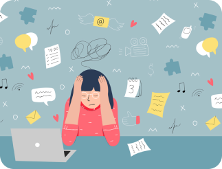
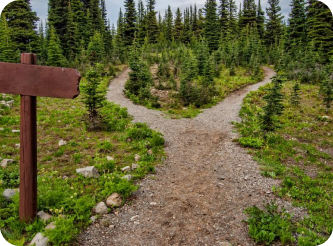
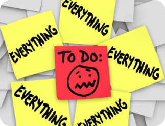
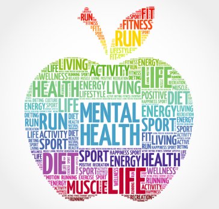

76.6% kampen met stress
76,8% van de Vlaamse scholieren in het middelbaar kampen met stress. Keuzestress is één van de meest voorkomende types.
Mijn wil,
Mijn weg

self-coaching traject voor adolescenten. Onze missie is hen een hoger niveau van zelfkennis bijbrengen en hun veerkrachtiger maken in stressvolle situaties.
60% ervaart prestatiedruk
60% van onze scholieren in het middelbaar ervaart prestatiedruk en heeft angst om niet te voeldoen aan de verwachtingen.
Samen kunnen we preventief onze jongeren tussen 16 en 22 jaar mentaal fitter maken
Wist je dat juist geformuleerde doelen, die vertrekken vanuit je eigen talenten en passies, zorgen voor
een positieve ingesteldheid? Wist je dat dit ook een stevige basis vormt van waaruit heldere keuzes
worden gemaakt en problemen makkelijker worden aangepakt?
Jongeren in staat stellen om :
- Hun eigen talenten en motivatoren te ontdekken
- Afgelijnde en haalbare doelen te formuleren
- Acties te plannen die binnen eigen controle liggen
Dat bieden wij, onder de vorm van een persoonlijk traject dat jongeren op hun eigen tempo kunnen doorlopen.
Onze oplossing: DE BOX
De 'Mijn wil, Mijn weg' box gidst je doorheen een zelftraject en maakt het initiatief in je wakker. Door het
denken, doen en voelen met elkaar te combineren wordt je op verschillende manieren geprikkeld.
Deze toolbox helpt jou in het uitzetten van doelgerichte acties dat binnen de eigen controle liggen. Dit
alles wordt versterkt met de opdracht tot het visueel (foto's, tekeningen, kleuren, spel...) maken van de
gewenste doelen en krachtbronnen uit het verleden.
Om deze mindset te verankeren zijn er maar liefst 40 reflectiemomenten voorzien.
Het platform
Een persoonlijke pagina die je door het traject gidst en motiverende berichten stuurt. Je vindt er ondersteunende filmpjes van een coach die je ook uitleg geeft over de gids, een overzicht van je talenten en de mogelijheid om te chatten met een professionele coach. Het plaftorm biedt de jongere eveneens inzichten die het aantal coaching uren reduceren.
Het platform
Een persoonlijke pagina die je door het traject gidst en motiverende berichten stuurt. Je vindt er ondersteunende filmpjes van een coach die je ook uitleg geeft over de gids, een overzicht van je talenten en de mogelijheid om te chatten met een professionele coach. Het plaftorm biedt de jongere eveneens inzichten die het aantal coaching uren reduceren.
DE 4 KRACHTIGE TOOLS VAN DE BOX
Het platform
Een persoonlijke pagina die je door het traject gidst en motiverende berichten stuurt. Je vindt er ondersteunende filmpjes van een coach die je ook uitleg geeft over de gids, een overzicht van je talenten en de mogelijheid om te chatten met een professionele coach. Het plaftorm biedt de jongere eveneens inzichten die het aantal coaching uren reduceren.
Het platform
Een persoonlijke pagina die je door het traject gidst en motiverende berichten stuurt. Je vindt er ondersteunende filmpjes van een coach die je ook uitleg geeft over de gids, een overzicht van je talenten en de mogelijheid om te chatten met een professionele coach. Het plaftorm biedt de jongere eveneens inzichten die het aantal coaching uren reduceren.

Candy Junius
Contact
Master Practitioner NLP-coach
Trainer in talenten & ondernemende vaardigheden
'Ondernemer van mijn eigen leven!'